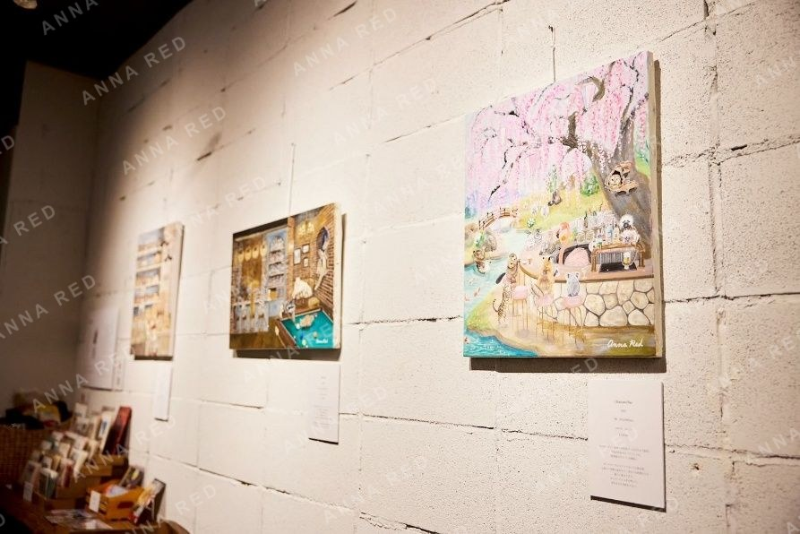
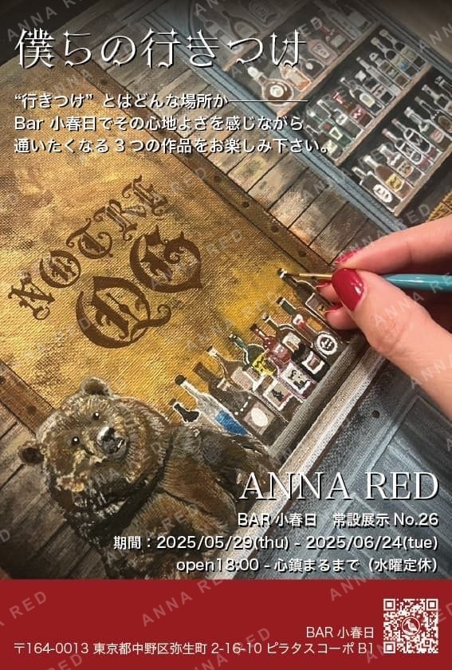
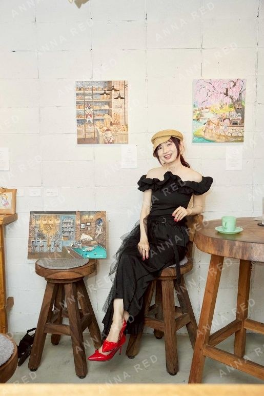

What kind of place is an "ikitsuke," a place you return to again and again?
While feeling the comfort of the venue, Bar Koharu-bi, visitors enjoyed three works created around places that make you want to come back.
A bakery in the morning,
day drinks enjoyed with the seasons,
and the familiar hidden bar that always feels just right.
They are the kinds of places where dependable companions are waiting, where conversations accumulate, and where you feel inspired to stand a little taller.
I believe both human relationships and physical spaces grow deeper with time, and eventually become a place where you truly belong.
I hope to become that kind of familiar painter too, someone people will want to return to and remember again and again.
Thank you to everyone who came to see the work.


Exhibition Information
Bar Koharu-bi
B1 Pilatus Corpo, 2-16-10 Yayoicho, Nakano-ku, Tokyo 164-0013
3 minutes on foot from Nakano-Shimbashi Station (Tokyo Metro Marunouchi Line)
Open 20:00 / from 18:00 until your mind grows calm
Closed on Wednesdays
Solo Exhibition "Bokura no Ikitsuke"
May 29 (Thu) - June 24 (Tue), 2025